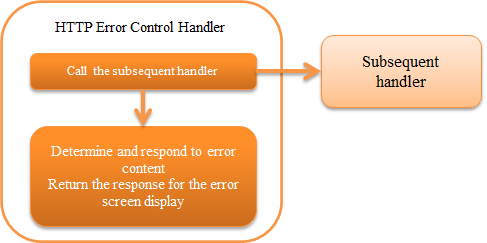

HTTP Error Control Handler¶
Table of contents
This handler performs log output and conversion to response for the exception that occurred in the subsequent handler.
This handler performs the following processes.
- Outputs log according to the type of exception
- Generates and returns HttpResponse for error according to exception type
- Configuration of the default page
The process flow is as follows.
Module list¶
<dependency>
<groupId>com.nablarch.framework</groupId>
<artifactId>nablarch-fw-web</artifactId>
</dependency>
Constraints¶
- Place this handler after the HTTP Response Handler
- Since HTTP response handler processes HttpResponse generated by this handler, it must be placed after HTTP Response Handler.
- Place this handler after the HTTP Access Log Handler
- Since log output is based on HttpResponse generated by this handler for error, it must be placed after HTTP Access Log Handler.
Processing according to the exception type and generation of response¶
- nablarch.fw.NoMoreHandlerException
Log level: INFO Response: 404 Description: It is recorded as a trace log since it means that the handler to process the request is not available. The response is configured to 404 because it means that the action class to be processed was not available. - nablarch.fw.web.HttpErrorResponse
Log level: No log output
Response: Description: Log is not output because it means that a business exception (error response is thrown as a result of validation, etc.) was thrown in a subsequent handler.
If the cause of
HttpErrorResponseexception is ApplicationException, perform the following process so that error message can be handled in view.Message information held by
ApplicationExceptionis converted to ErrorMessages.Configure
ErrorMessagesin the request scope. The key name when configuring to the request scope iserrorsby default. The key name can be changed in the component configuration file.- Configuration example
<component name="webConfig" class="nablarch.common.web.WebConfig"> <!-- Change key to messages --> <property name="errorMessageRequestAttributeName" value="messages" /> </component>
- nablarch.fw.Result.Error
Log level: Depends on the configuration Response: Error#getStatusCode() Description: See Log output of nablarch.fw.Result.Error . - java.lang.StackOverflowError
Log level: FATAL Response: 500 Description: Since it may be caused by a data or implementation bug, notified as a failure. The response is 500 because it is an unexpected error. - java.lang.ThreadDeath and java.lang.VirtualMachineError ( other than java.lang.StackOverflowError )
Log level: - Response: - Description: This handler does nothing and leaves the processing to the upper handler. (Resend error) - Exceptions and errors other than the above
Log level: FATAL Response: 500 Description: For exceptions and errors that do not correspond to the above, log is output as a failure. The response is 500 because it is an unexpected exception or error.
Log output of nablarch.fw.Result.Error¶
If the exception raised in the subsequent handler is Error, then whether to output the log changes depending on the value configured in writeFailureLogPattern. A regular expression can be configured to this property, and if the regular expression matches Error#getStatusCode(), a FATAL level log is output.
Configuration of the default page¶
Apply the default page to the HttpResponse created by error handling in subsequent handlers and this handler. In this function, if HttpResponse is not configured, apply the default page configured by defaultPage and defaultPages.
A configuration example is shown below.
<component class="nablarch.fw.web.handler.HttpErrorHandler">
<property name="defaultPages">
<map>
<entry key="4.." value="/USER_ERROR.jsp" />
<entry key="404" value="/NOT_FOUND.jsp" />
<entry key="5.." value="/ERROR.jsp" />
<entry key="503" value="/NOT_IN_SERVICE.jsp" />
</map>
</property>
</component>
Important
When this function is used, JSP configuration must be duplicated with the error page configuration (error-page element) for web.xml specified by the Servlet API. If web.xml is not configured, the default error page of the web server will be displayed based on where the error occurred.
Therefore, configuring the default error page in web.xml instead of using this function is recommended.